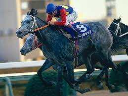

趣味・好きなこと
- ゲーム
- アニメ鑑賞
- 野球
- 競馬視聴
- ごはん 180g
- とんかつ 豚ロース (厚切り)100g
- 塩こしょう 小さじ1/4
- 薄力粉 小さじ2
- 溶き卵 1/2個分
- パン粉 大さじ1
- 揚げ油 適量
- 玉ねぎ 1/4個
- 卵 2個
- 調味料
- 水 50ml
- 料理酒 大さじ1
- みりん 大さじ1
- しょうゆ 大さじ1
- 砂糖 小さじ1
- 顆粒和風だし 小さじ1/2
- 三つ葉 3g
~コメント~
・好きなゲーム・(apex,うま娘など)

・好きなアニメ・シュタインズゲート
・好きな球団・ソフトバンクホークスで好きな選手は柳田選手
・好きな馬は、オグリキャップ

・スタイリッシュヌーブ顔(>_<)
好きな食べ物
材料(1人前)
作り方
1. 三つ葉は根元を切り落とし、2cm幅に切ります。
2. 玉ねぎは薄切りにします。
3. 豚ロースは筋を切ります。ラップをのせて麺棒で叩き、両面に塩こしょうをふります。
4. 薄力粉、溶き卵、パン粉の順に衣をつけます。
5. フライパンの底から4cmほどの高さまで揚げ油を注ぎ、170℃に熱し、4を入れます。中に火が通り、表面が色づくまで5分ほど揚げ、油切りをします。
6. 2cm幅に切ります。
7. 鍋に2、水、調味料の材料を入れて中火で熱します。
8. 玉ねぎがしんなりしたら、中火のまま6と軽く溶きほぐした卵を入れます。蓋をして火を止め、30秒蒸らします。
9. 丼にごはんをよそい、8をのせ、1を散らして出来上がりです。